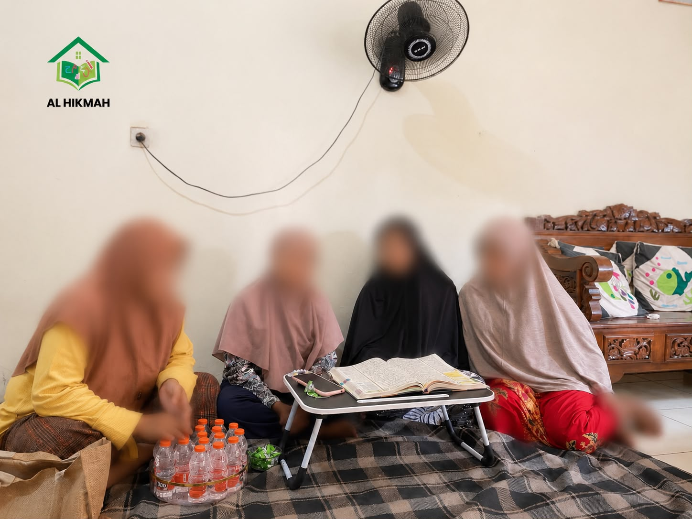

AL-HIKMAH
Kami percaya bahwa belajar Al-Qur'an bukan sekadar tentang mampu membaca dan menghafal ayat. Lebih dari itu, ia adalah perjalanan untuk mengenal Allah, membentuk adab, dan menumbuhkan akhlak yang baik dalam kehidupan.
AL-HIKMAH hadir untuk mendampingi anak dan keluarga dalam perjalanan tersebut dengan penuh kesabaran, kasih sayang, dan keteladanan.
Program utama kami dirancang untuk anak usia 10–15 tahun. Program tambahan juga tersedia untuk dewasa dan muslimah.
Untuk keluarga yang ingin menjadikan Al-Qur'an bagian dari kehidupan.

خَيْرُكُمْ مَنْ تَعَلَّمَ الْقُرْآنَ وَعَلَّمَهُ
"Sebaik-baik kalian adalah orang yang belajar Al-Qur'an dan mengajarkannya."
HR. Bukhari
Bagi kami, mengajarkan Al-Qur'an adalah sebuah amanah.
Setiap huruf yang dipelajari adalah bagian dari perjalanan. Setiap ayat yang dibaca adalah
kesempatan untuk mendekat kepada Allah. Dan setiap kebaikan yang tumbuh dari ilmu tersebut
adalah harapan yang ingin kami jaga bersama.

Di tengah kesibukan kehidupan, tidak semua keluarga memiliki kesempatan untuk mendampingi anak belajar Al-Qur'an secara konsisten.
Ada yang terkendala waktu.
Ada yang kesulitan menemukan pendamping yang sesuai.
Ada pula yang ingin anaknya belajar dengan suasana yang lebih nyaman dan penuh kasih sayang.
Dari situlah AL-HIKMAH hadir.
Bukan sekadar untuk mengajarkan cara membaca Al-Qur'an, tetapi untuk menemani setiap langkah
kecil dalam perjalanan mengenal dan mencintai Al-Qur'an.
Kami ingin menjadi bagian kecil dari ikhtiar keluarga dalam menanamkan nilai-nilai Islam sejak dini.
"Karena kami percaya, pendidikan terbaik bukan hanya tentang apa yang diketahui oleh seorang anak, tetapi tentang kebaikan yang tumbuh dalam dirinya."
Al-Hikmah bukan hanya tentang pengetahuan.
Bagi kami, hikmah adalah ketika ilmu yang dipelajari mampu membimbing seseorang untuk mengenal kebenaran, memperbaiki akhlak, dan menghadirkan kebaikan dalam kehidupan.
Karena itu, kami tidak ingin hanya membantu seseorang menjadi lebih mampu membaca Al-Qur'an.
Kami ingin menemani proses agar ilmu yang dipelajari perlahan menjadi sesuatu yang hidup dalam hati, tercermin dalam akhlak, dan membawa manfaat bagi sesama.
Setiap huruf dipelajari dengan pemahaman, bukan sekadar pengulangan.
Karena ilmu yang baik seharusnya melahirkan akhlak yang baik pula.
Langkah kecil yang terus-menerus lebih kami hargai daripada lompatan besar yang sekejap.
Belajar dengan ilmu. Bertumbuh dengan adab. Berjalan dengan istiqamah.
Ilmu yang baik seharusnya melahirkan akhlak yang baik.
Karena itu, dalam setiap proses belajar, kami berusaha menjaga nilai-nilai yang menjadi bagian dari
perjalanan AL-HIKMAH.
Mengajarkan dan belajar Al-Qur'an sebagai bentuk ibadah dan upaya mendekatkan diri kepada Allah.
Karena sebelum ilmu menjadi cahaya, hati perlu belajar menghormati ilmu, pendamping, orang tua, dan sesama.
Kami percaya bahwa anak akan lebih mudah belajar ketika ia merasa aman, dihargai, dan disayangi.
Setiap murid adalah titipan yang harus didampingi dengan tanggung jawab dan kesungguhan.
Kami tidak mengejar kesempurnaan dalam satu hari. Kami mengajarkan pentingnya terus melangkah, sedikit demi sedikit.
Karena pendidikan tidak hanya terjadi melalui apa yang diajarkan, tetapi juga melalui apa yang dicontohkan.

suasana belajar
Kami berharap perjalanan belajar bersama AL-HIKMAH dapat menjadi lebih dari sekadar kemampuan membaca atau menghafal.
Kami ingin membantu menumbuhkan:
Agar Al-Qur'an tidak hanya dibaca ketika belajar, tetapi menjadi bagian dari kehidupan.
Agar ilmu yang dipelajari tercermin dalam sikap dan perilaku.
Agar anak terbiasa mengenal doa, dzikir, dan nilai-nilai Islam dalam kesehariannya.
Agar setiap proses belajar menjadi jalan untuk mengenal dan mendekat kepada Sang Pencipta.
Agar tidak ada rasa malu untuk belajar, meskipun harus memulai dari nol.
Tidak ada kata terlambat untuk belajar Al-Qur'an.
Ada yang baru mengenal huruf hijaiyah. Ada yang sedang memperbaiki bacaannya. Ada yang ingin
menghafal. Ada pula yang ingin memahami bahasa Al-Qur'an lebih dalam.
Karena itu, kami menyediakan beberapa program yang disesuaikan dengan kebutuhan dan tahap perjalanan belajar masing-masing.
Memulai perjalanan mengenal huruf hijaiyah dan membaca Al-Qur'an secara bertahap.
Membantu memperbaiki bacaan agar lebih baik dan sesuai dengan kaidah tajwid.
Mengenalkan nilai-nilai adab Islami dan doa yang dapat diamalkan dalam kehidupan sehari-hari.
Mendampingi anak dalam menghafal Al-Qur'an secara bertahap dengan murajaah dan pembiasaan.
Tidak pernah terlambat untuk memulai. Program untuk siapa saja yang ingin belajar dari dasar.
Pendampingan untuk memperbaiki makhraj, tajwid, dan kualitas bacaan.
Ruang belajar yang nyaman bagi muslimah bersama pendamping wanita.
Mendampingi perjalanan menghafal dengan target yang disesuaikan kemampuan.
Mengenal kosakata dan percakapan dasar untuk membangun fondasi bahasa Arab.
Mempelajari dasar-dasar tata bahasa Arab sebagai bekal untuk memahami teks-teks keislaman dan mendalami Al-Qur'an.
Setiap keluarga memiliki keadaan yang berbeda.
Karena itu, kami berusaha menghadirkan cara belajar yang dapat menyesuaikan kebutuhan tanpa
menghilangkan tujuan utama: mendampingi perjalanan belajar Al-Qur'an dengan baik.
Belajar dari Mana Saja
Pendamping Datang ke Rumah
Belajar dengan Fleksibilitas
Metode dapat disesuaikan. Nilai yang kami jaga tetap sama.
Pendamping datang ke rumah Anda. Tersedia juga kelas online untuk seluruh Indonesia.

suasana pendampingan
Setiap anak memiliki kecepatan belajar yang berbeda. Kami tidak ingin menjadikan proses belajar sebagai perlombaan.
Ada yang membutuhkan waktu lebih lama untuk mengenal huruf. Ada yang perlu mengulang berkali-kali. Ada yang perlahan membangun keberanian untuk membaca.
Semua itu adalah bagian dari perjalanan. Karena itu, kami berusaha mendampingi dengan kesabaran, memberikan ruang untuk bertumbuh, dan mengajarkan bahwa belajar Al-Qur'an adalah perjalanan seumur hidup.
Menghafal Al-Qur'an adalah perjalanan yang membutuhkan kesabaran, doa, dan istiqamah.
Karena itu, kami tidak hanya mendampingi proses menambah hafalan, tetapi juga membangun kebiasaan murajaah agar ayat-ayat yang telah dihafalkan tetap terjaga.
Semoga ayat yang dihafal tidak hanya tinggal di ingatan, tetapi juga menjadi cahaya dalam kehidupan.
Pelajari Program Tahfidz
Setiap pertemuan memiliki cerita.
Ada huruf yang pertama kali dikenali. Ada ayat yang perlahan mulai lancar dibaca. Ada hafalan yang
berhasil diselesaikan. Ada senyum kecil setelah berhasil melewati sesuatu yang sebelumnya terasa
sulit.
Inilah sebagian kecil dari perjalanan belajar bersama AL-HIKMAH.
Gambar yang ditampilkan merupakan ilustrasi suasana belajar.
Bagi kami, keberhasilan bukan hanya ketika seorang anak mampu membaca dengan lancar.
Tetapi ketika ia mulai mencintai Al-Qur'an. Ketika ia mulai membuka mushaf tanpa diminta. Ketika ia
mulai menghafal doa. Ketika ia mulai memahami adab. Dan ketika nilai-nilai yang dipelajari mulai
terlihat dalam kesehariannya.
"Anak saya jadi lebih semangat belajar Al-Qur'an sejak didampingi AL-HIKMAH. Pendekatannya sabar dan membuat anak nyaman. Saya melihat perubahan positif dalam kesehariannya."
"Awalnya saya ragu belajar Al-Qur'an di usia dewasa. Tapi pendamping di AL-HIKMAH sangat sabar dan tidak pernah membuat saya merasa malu. Sekarang saya lebih percaya diri membaca Al-Qur'an."
"Yang saya suka, jadwal bisa disesuaikan dengan kegiatan sekolah anak. Pendampingnya profesional dan selalu tepat waktu. Anak saya sekarang lebih disiplin dan semangat belajar."
Testimoni di atas adalah representasi dari pengalaman belajar yang ingin kami tumbuhkan bersama setiap keluarga.
AL-HIKMAH selalu membuka kesempatan bagi siapa saja yang ingin menjadi pendamping dalam perjalanan belajar Al-Qur'an.
Jika Anda memiliki kemampuan membaca Al-Qur'an dengan baik, senang mendampingi anak-anak belajar, dan ingin menjadi bagian dari perjalanan kebaikan ini, kami ingin mengenal Anda lebih dekat.
Memiliki bacaan Al-Qur'an yang baik dan memahami tajwid dasar.
Sabar, menyayangi anak-anak, dan mampu menjadi teladan yang baik.
Bersedia menjalani proses seleksi dan pelatihan yang disediakan.
Tidak perlu sempurna. Yang kami cari adalah kemauan untuk terus belajar dan ketulusan untuk mendampingi.
Kami memahami bahwa setiap keluarga memiliki pertanyaan dan kebutuhan yang berbeda.
Silakan temukan beberapa jawaban yang mungkin membantu Anda sebelum memulai perjalanan
bersama AL-HIKMAH.
Kami berusaha menjaga informasi biaya tetap transparan agar setiap keluarga dapat mempertimbangkan pilihan pendampingan yang sesuai dengan kebutuhan dan kemampuannya.
Tidak ada paksaan untuk memilih program tertentu. Silakan berdiskusi dengan kami untuk menemukan pilihan pendampingan yang paling sesuai.
Mungkin hari ini anak kita baru belajar satu huruf. Mungkin baru satu ayat. Mungkin baru satu
doa.
Namun dari langkah kecil itulah perjalanan besar dapat dimulai.
Mari bersama-sama mendampingi generasi kita untuk mengenal Al-Qur'an, mencintainya, dan menjadikannya bagian dari kehidupan.
Semoga setiap huruf yang dipelajari menjadi cahaya.
Semoga setiap ayat yang dihafalkan menjadi penjaga.
Dan semoga setiap langkah kecil menuju Al-Qur'an menjadi amal kebaikan yang terus mengalir.